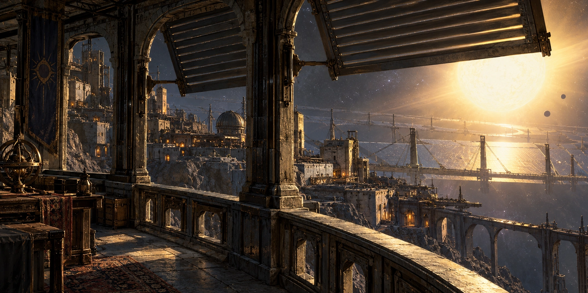
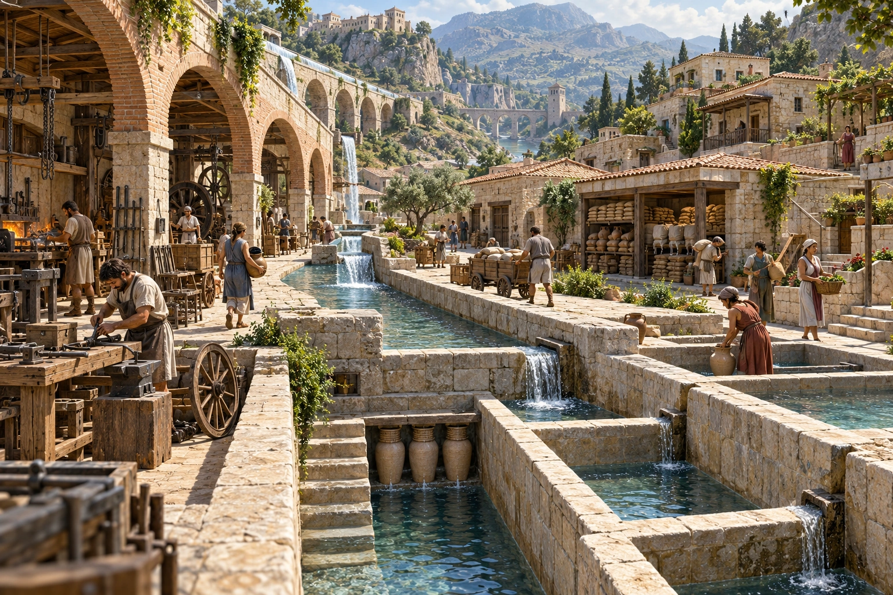
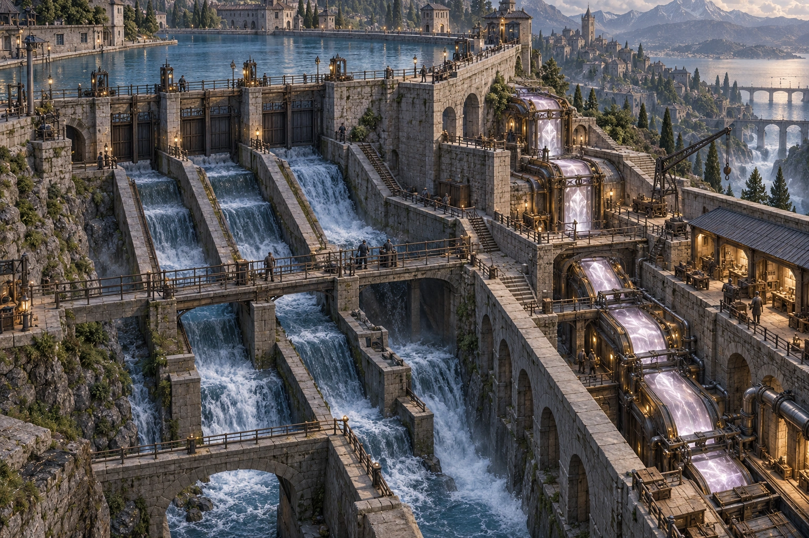
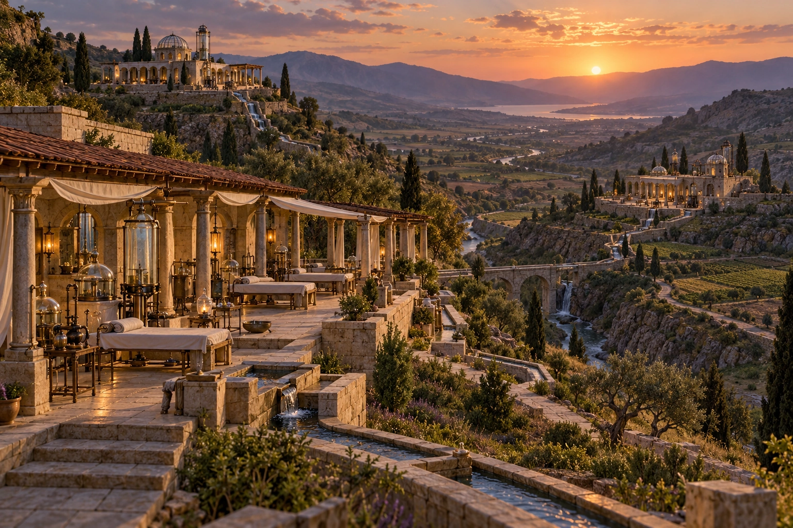
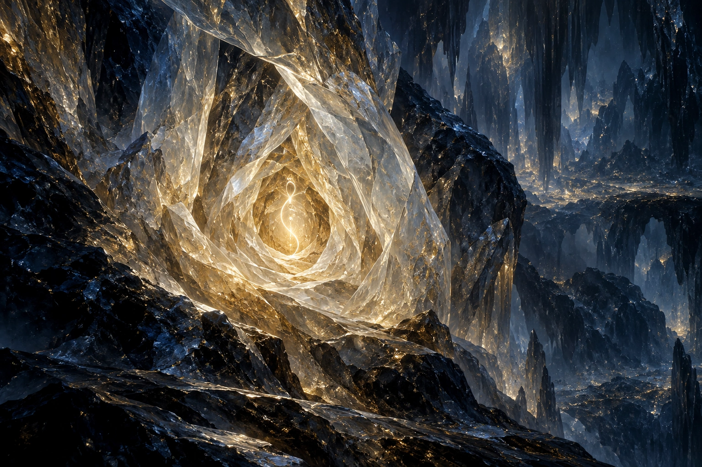
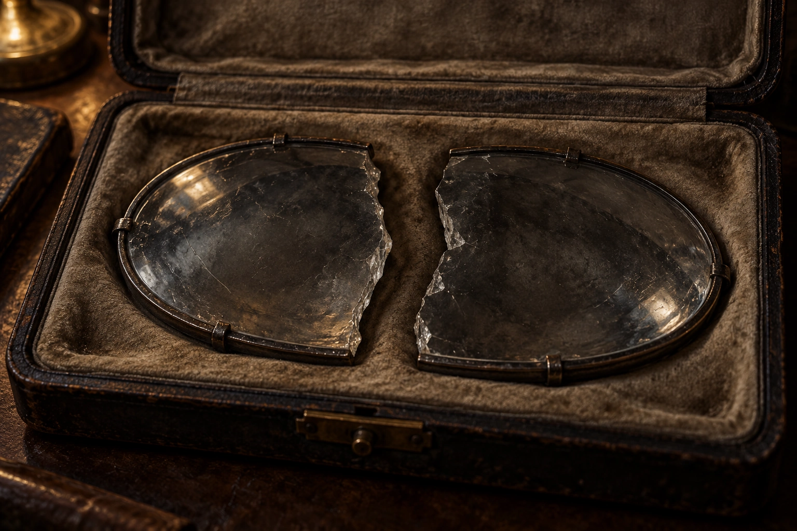
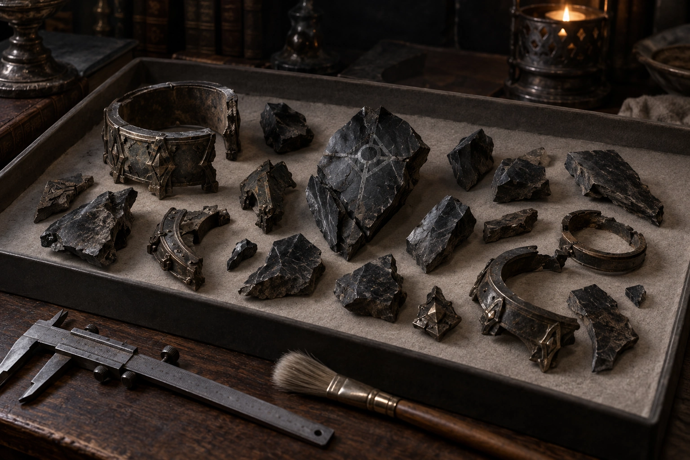

Creazioni, infrastrutture, progetti e tracce lasciati dalla prima vita di Edran. Il catalogo distingue un’opera personale da una collaborazione e da ciò che resta delle strutture combattute. La creazione di una risorsa non trasferisce al suo autore la proprietà eterna di chi la usa. Le pagine riportano anche lo stato contemporaneo: ciò non rende ogni informazione una memoria automatica di Alexander.
La creazione cosmica
 The Vigil StarCreazione stellare
The Vigil StarCreazione stellare
Vigil ReachSistema e insediamentiInfrastrutture e liberazione

The Unbound WorksRete di opere civili
The Namar WorksInfrastruttura di bacinoProgetto, ripiegamento e ritorno

The Departure ProjectProgetto distribuito
Inner RefugeConfigurazione personale storica
The Quiet GlassSupporto di vetro e metalloTracce e testimonianze

Grey Brand RemnantsEredità materiale, non creazione coercitiva di EdranIstituzioni e campagne collegate
Water Truce è un accordo; Open Wells una campagna e una sistemazione degli accessi; le Nine Houses sono sedi e funzioni civili; i Free Hearths comunità e rifugi collettivi. Non sono tutti manufatti creati personalmente da Edran. Le Signorie Immobili e la liberazione spiegano il contesto.
Ciò che nacque con lui
The Origin e The First Testament appartengono all’esistenza innata di Edran: non sono opere costruite nella sua età adulta.